Manual de usuario
Administración de obra en GESPRO
Para el profesional o administrador de obra: la persona que responde por la obra y aprueba en primer lugar casi todo lo que se pide, se recibe y se gasta en ella. Este manual explica cómo hacerlo en el día a día.
- Rol en GESPRO
- Profesional de obra
- Su pantalla principal
- Bandeja de pendientes
- Ejemplos con
- Javiera Contreras · obra 1201 Edificio Mirador del Lago
1Entrar y elegir la obra
GESPRO se abre en el navegador, desde el computador o el teléfono. Entras con tu correo y tu contraseña.

- Escribe tu correo electrónico.
- Escribe tu contraseña. El ojo de la derecha la muestra, por si dudas de lo que escribiste.
- Pulsa Iniciar sesión.
Si trabajas en más de una obra, GESPRO te pregunta en cuál vas a trabajar. Todo lo que hagas después queda en esa obra, y puedes cambiarla cuando quieras desde la cabecera.
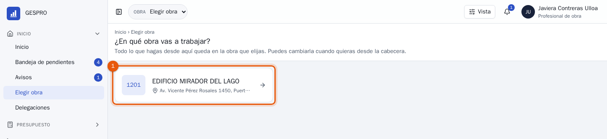
- Pulsa la tarjeta de tu obra.
¿Olvidaste tu contraseña? Usa ¿Olvidaste tu contraseña? en la pantalla de ingreso y te llega un correo para crear otra.
2La pantalla
Arriba está siempre la cabecera. A la izquierda dice dónde estás trabajando; a la derecha están tus herramientas.
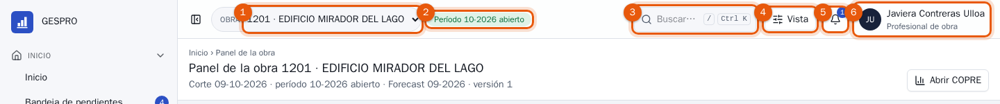
- La obra activa. Despliégala para cambiar de obra.
- El período abierto. El mes de control en curso, por ejemplo 10-2026. Lo que registres con fecha de ese mes cuenta en él.
- El buscador. Encuentra una pantalla, un documento por su folio, una partida o un proveedor. Ver Buscar un documento.
- Vista. Ajusta GESPRO a tu gusto: tema claro u oscuro, tamaño de letra, más o menos espacio, menú lateral o barra superior.
- Avisos. La campana muestra cuántos avisos tienes sin leer.
- Tu nombre y tu rol. Desde aquí cambias tu contraseña o sales de GESPRO.
A la izquierda está el menú, con las secciones que tu rol puede ver: Inicio, Presupuesto, Compras, Bodega, Contratos, Gastos y mano de obra, Control y Reportes. El número azul junto a Bandeja de pendientes es lo que espera tu firma.
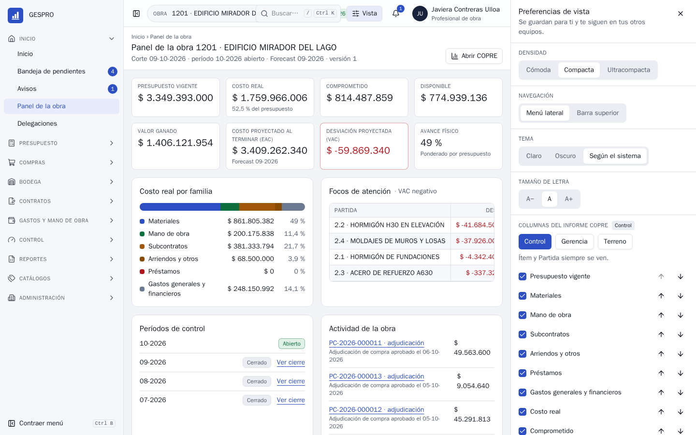
3El panel de la obra
Es la foto de la obra en una pantalla: cuánto hay, cuánto se ha gastado, qué se proyecta y qué está pendiente. Lo abres desde Inicio › Panel de la obra.
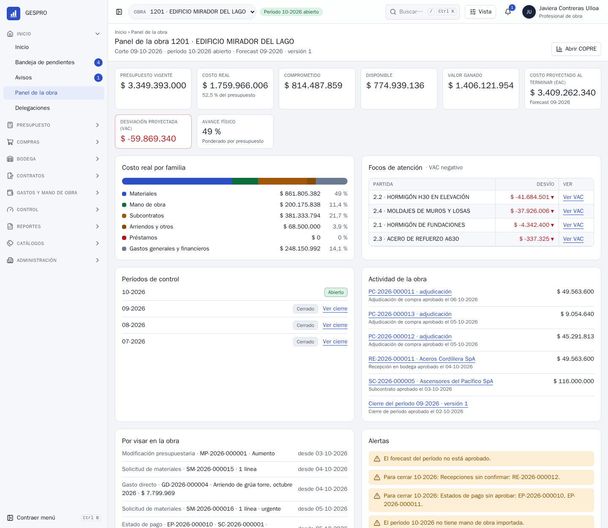
Las cifras de arriba
- Presupuesto vigente
- El presupuesto aprobado de la obra, con sus modificaciones.
- Costo real
- Lo que ya es costo: materiales entregados, estados de pago, mano de obra, arriendos y gastos aprobados.
- Comprometido
- Lo que ya se encargó y aún no es costo: órdenes de compra y subcontratos por recibir o pagar.
- Disponible
- Presupuesto menos costo real menos comprometido. Lo que queda para lo que falta.
- Costo proyectado al terminar (EAC)
- Cuánto costará la obra completa según el último forecast aprobado.
- Desviación proyectada (VAC)
- Presupuesto menos costo proyectado. En rojo, la obra va a costar más de lo presupuestado.
- Avance físico
- Cuánto de la obra está construido, ponderado por el presupuesto de cada partida.
Lo de abajo
Focos de atención lista las partidas que más se desvían; Ver VAC abre el detalle. Por visar en la obra muestra todo lo que espera una firma, sea tuya o de otra persona. Alertas dice lo que impediría cerrar el mes, como recepciones sin confirmar o estados de pago sin aprobar.
4La bandeja
Es donde pasarás la mayor parte del tiempo. Reúne todo lo que espera tu firma, de todas tus obras, agrupado por tipo de documento. Aprobar u observar se hace desde la misma lista, sin abrir cada documento.
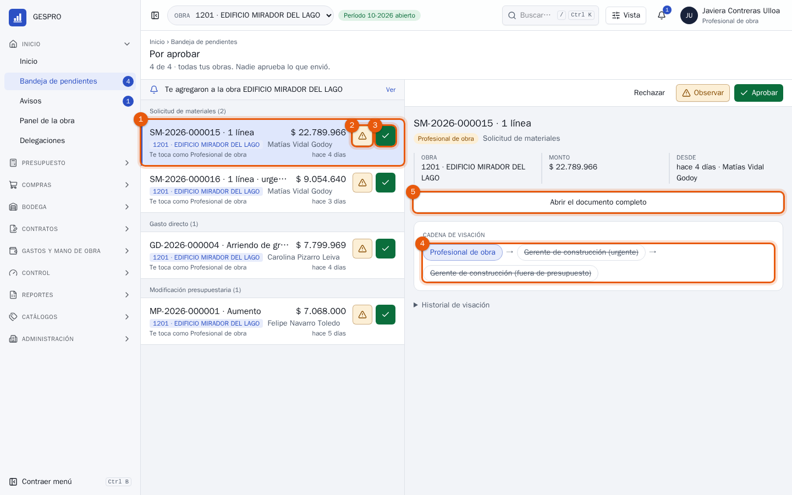
- La tarjeta del documento: folio, monto, obra, quién lo envió, por qué te toca y hace cuánto espera. Púlsala para ver su resumen a la derecha.
- Observar (el triángulo): lo devuelves a quien lo envió para que corrija algo.
- Aprobar (el visto bueno): firmas y el documento sigue su camino.
- La cadena de visación: quién firma y en qué orden. Tu paso está destacado. Un paso tachado no aplica a este documento, por ejemplo la firma del gerente cuando la solicitud no es urgente.
- Abrir el documento completo, si quieres revisar sus líneas o sus respaldos antes de decidir.
Nadie aprueba lo que él mismo envió. Si armaste un documento, lo firma la siguiente persona de la cadena.
Aprobar, y deshacer si te equivocaste
Al aprobar, la tarjeta sale de la lista y abajo a la derecha aparece un aviso con Deshacer. Tienes unos segundos para arrepentirte; después la aprobación queda registrada.
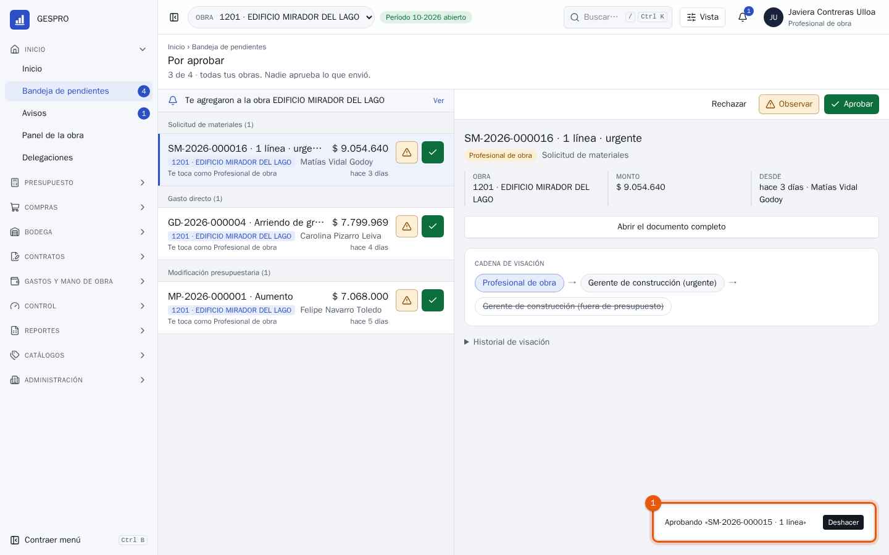
- El aviso Aprobando… con su botón Deshacer.
Observar o rechazar, siempre con motivo
Cuando algo no está bien, observa el documento y escribe qué hay que corregir. Quien lo envió lo recibe de vuelta, lo arregla y lo vuelve a enviar.
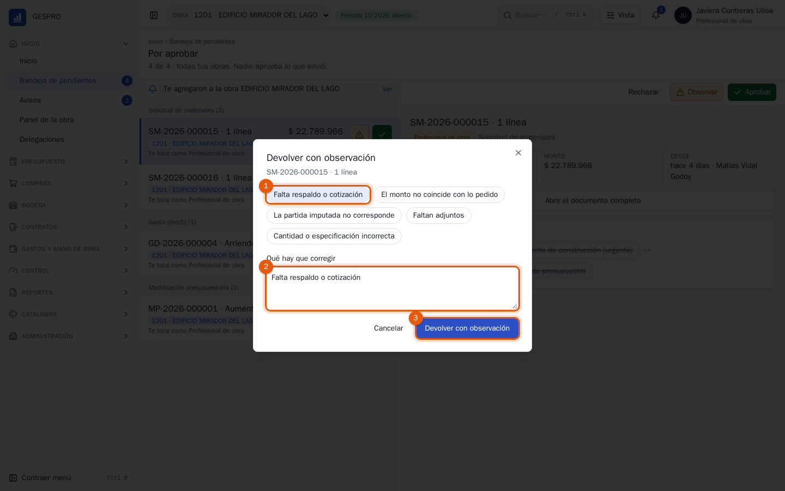
- Elige un motivo frecuente para no escribirlo cada vez.
- Complétalo o escribe el tuyo en Qué hay que corregir. Es obligatorio.
- Pulsa Devolver con observación.
Se corrige y vuelve
El documento vuelve a su autor, que lo corrige y lo envía de nuevo. La cadena parte otra vez desde el principio.
Se termina
El documento queda rechazado y no sigue. Si igual se necesita, hay que crear uno nuevo. Está en la vista previa, junto a Observar.
5La ficha de un documento
Cada solicitud, recepción, gasto o estado de pago tiene su ficha. Si el documento espera tu firma, puedes aprobar u observar desde ahí mismo.
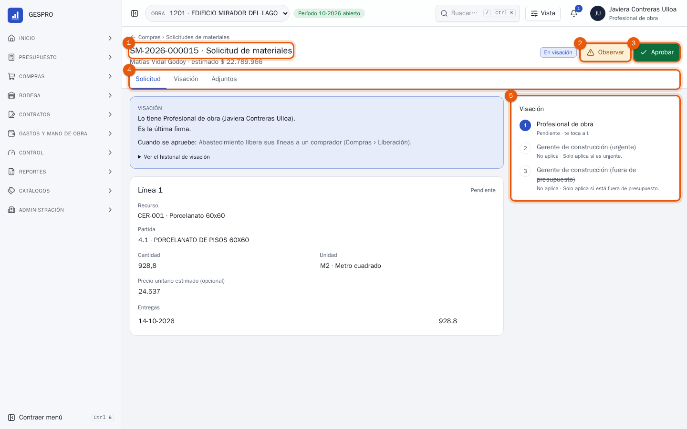
- El folio y el tipo de documento. Debajo, quién lo armó y el monto. Al lado, su estado (En visación).
- Observar, igual que en la bandeja.
- Aprobar.
- Las pestañas: el contenido del documento, su Visación con el historial completo y sus Adjuntos.
- La cadena de visación, paso a paso: quién ya firmó, a quién le toca y quién viene después. Un paso que no corresponde se ve tachado, con No aplica y el motivo, por ejemplo «Solo aplica si es urgente».
El recuadro azul de arriba dice en palabras dónde está el documento y qué pasará cuando se apruebe. En una solicitud de materiales, por ejemplo: «Abastecimiento libera sus líneas a un comprador».
6Respaldos y visor
Las facturas, boletas, guías y certificados se ven dentro de GESPRO, sin descargarlos.
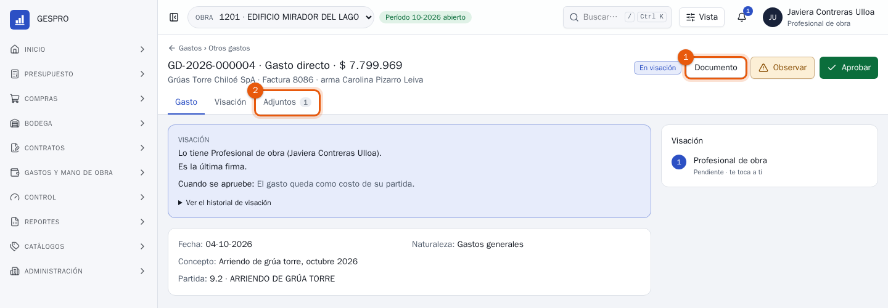
- Documento abre el respaldo principal, aquí la factura del gasto.
- En Adjuntos están todos los archivos del documento, con su versión. Pulsa el nombre de cualquiera para verlo.
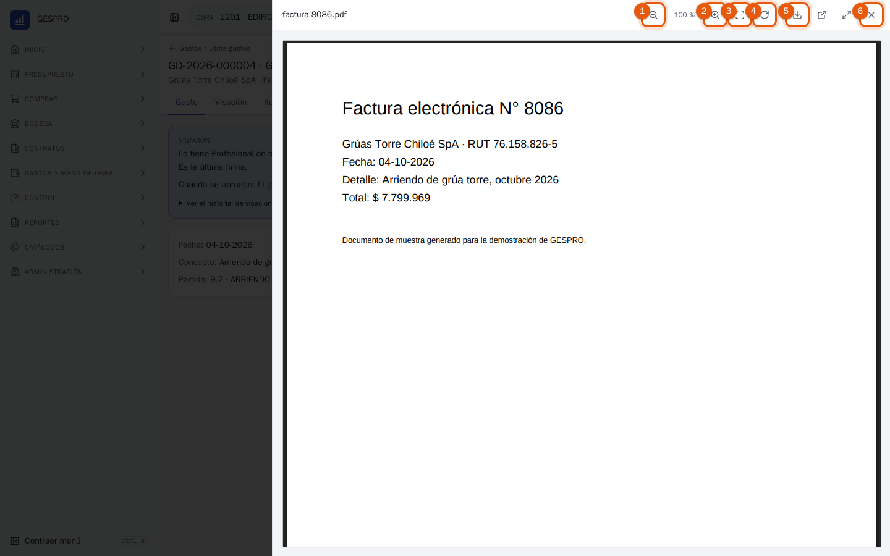
- Alejar. También con la tecla −.
- Acercar. También con +.
- Ajustar a la pantalla. Con 0.
- Girar 90°, para la boleta fotografiada de lado. Con R.
- Descargar el original.
- Cerrar el visor. También con Esc.
Los otros dos botones abren el archivo en una pestaña nueva o amplían el visor a toda la pantalla. Una planilla Excel o un CSV no se pueden mostrar: esos se descargan directamente.
7Qué te toca visar
Estas son las cadenas con que GESPRO viene configurado. Tu empresa puede ajustarlas; la cadena real de cada documento siempre está en su ficha.
| Documento | Lo arma | Tu firma |
|---|---|---|
| Solicitud de materiales | Profesional de terreno | Primera. Si es urgente o va fuera de presupuesto, después firma el gerente de construcción. |
| Recepción en bodega | Bodeguero | Segunda, después del jefe de bodega. |
| Traspaso y préstamo de materiales | Bodeguero | Única. |
| Inventario | Bodeguero | Primera; después control de gestión. |
| Subcontrato, anexo y estado de pago | Jefe administrativo | Segunda, después de terreno; siguen jefe administrativo, supervisor y gerente. |
| Arriendo y su extensión | Jefe administrativo | Segunda, después del jefe de bodega. |
| Rendición de caja chica | Quien rinde | Única. |
| Otros gastos directos | Quien rinde | Única. |
| Medición de avance | Profesional de terreno | Única. |
| Presupuesto y sus modificaciones | Presupuesto | Primera; después el gerente o control de gestión. |
Que la partida sea la que corresponde, que el monto o la cantidad calcen con el respaldo y que el respaldo esté adjunto y sea legible. Si algo falla, observa con el motivo; no apruebes para corregir después.
8Buscar un documento
Pulsa el buscador o usa / o Ctrl + K desde cualquier pantalla. Se ensancha y muestra lo que coincide mientras escribes.
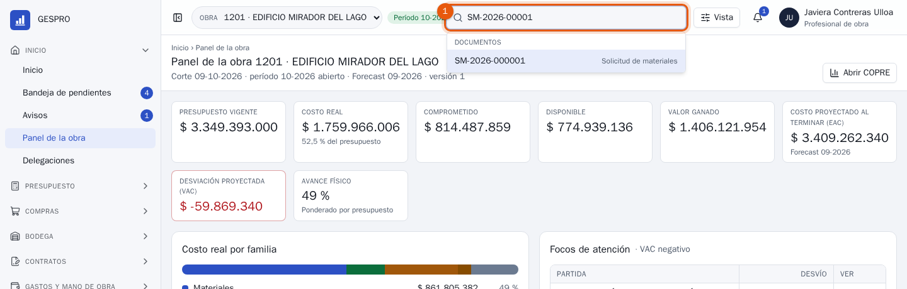
- Escribe un folio (SM-2026-000015), el nombre de una pantalla (copre), una partida o un proveedor. Elige con las flechas y abre con Enter.
Dentro de un listado, como Compras › Solicitudes de materiales, hay además un buscador propio junto a los filtros: busca por folio, partida, recurso o solicitante en todas las páginas del listado.
9Avisos y delegaciones
Avisos
GESPRO te avisa de lo que te concierne: que te agregaron a una obra, que un documento tuyo fue observado o aprobado, que algo espera tu firma. La campana de la cabecera muestra cuántos tienes sin leer.
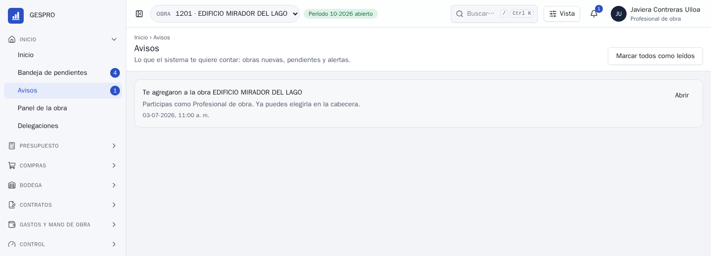
Delegar tus aprobaciones
Si sales de vacaciones o con licencia, delega tus firmas para que nada se detenga. En Inicio › Delegaciones eliges a la persona, la obra, el tipo de documento (o todos), las fechas y el motivo.
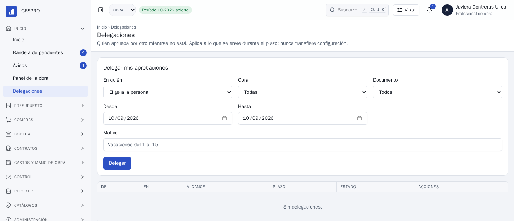
La delegación solo vale para lo que llegue durante esas fechas. Lo que ya estaba en tu bandeja sigue siendo tuyo, y la configuración de las cadenas no cambia.
10En el teléfono
En el teléfono, GESPRO pone la bandeja al alcance del pulgar. Abajo hay una barra con Bandeja, COPRE, Obra, Avisos y Más, que abre el resto del menú.
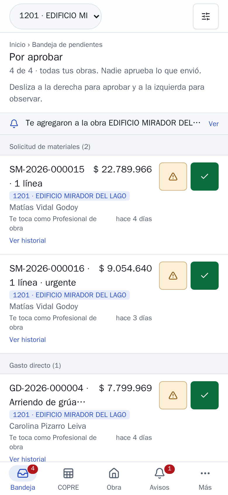
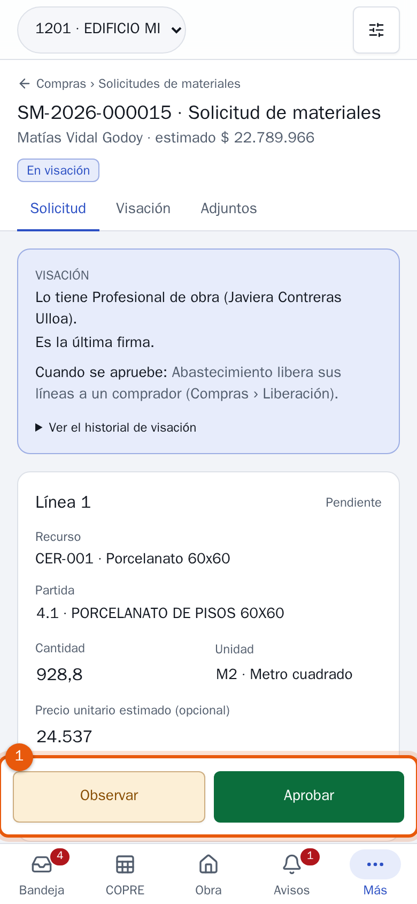
11Preguntas frecuentes
Aprobé algo por error y ya no aparece «Deshacer».
Pasados unos segundos la aprobación queda firme y no se puede revertir desde la bandeja. Si después de ti firma otra persona, pídele que lo observe con el motivo y el documento volverá a su autor. Si tu firma era la última, avisa a quien lo armó: según el documento, se anula o se corrige con una versión nueva, que vuelve a pasar por visación.
Me llegó un enlace a un documento y dice «No encontramos lo que buscas».
El documento es de otra obra. Cámbiala en la cabecera y vuelve a abrir el enlace. Si no ves esa obra en la lista, no eres parte de ella: pide al administrador del sistema que te agregue.
¿Por qué en la cadena aparecen pasos tachados?
Son firmas que solo aplican en ciertos casos, por ejemplo el gerente de construcción cuando la solicitud es urgente o va fuera de presupuesto. Si están tachados, este documento no las necesita.
No veo el botón Aprobar en un documento.
Todavía no es tu turno en la cadena, ya firmaste, o tú mismo armaste el documento. La cadena de la ficha dice a quién le toca.
¿Qué pasa con lo que registro con fecha de un mes ya cerrado?
Un mes cerrado no cambia. Lo que llega tarde se cuenta en el período abierto y queda marcado como extemporáneo en el cierre.
Me voy de vacaciones. ¿Qué hago con mi bandeja?
Antes de salir, aprueba u observa lo pendiente y crea una delegación por las fechas de tu ausencia en Inicio › Delegaciones.